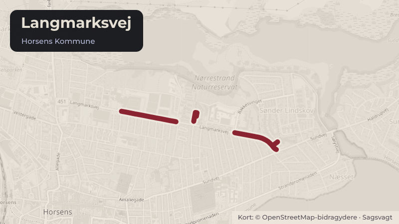

På dagsordenen 1. december, Plan- og Vejudvalget, Horsens
PV Anlægsbevilling, forlægning af Langmarksvej og flytning af lukning ved Hasselvej

Kort fortalt
- Hvem
- Plan- og Vejudvalget, Horsens Kommune
- Hvornår
- Tirsdag 1. december 2026
- Status
- På dagsordenen. Sagen behandles på mødet.
Er noget forkert her? Skriv til os
Hvad kan du gøre?
- Skriv til politikerne
- Udvalgets møder er lukkede, men du kan skrive til medlemmerne før mødet tirsdag 1. december 2026. Du finder dem på horsens.dk.
Læs hele sagen Kommunens egen tekst
Indstilling
Direktionen indstiller, at
1. Byrådet giver en anlægsbevilling med tilhørende rådighedsbeløb på 0,25 mio. kr. i
2027, til etablering af vejlukning ved Hasselvej og nedlægning af eksisterende
vejlukning ved Hasselvej/Lindeparken.
2. Byrådet godkender, at rådighedsbeløbet ved projektet finansieres via midler fra
mobilitetspuljen.
3. Byrådet udtrykker vilje til at ekspropriere dele af matr.nr. 4hy, Horsens Markjorde til
realisering af projektet, hvis der ikke kan indgås frivillig aftale om kommunens køb.
Sagsfremstilling
Tilbage i 2019 blev det besluttet, at der i forbindelse med forlægningen af Langmarksvej skulle
lukkes 13 veje med udkørsel til Langmarksvej. Lukningen ved Hasselvej var én af de 13
lukninger.
I forbindelse med den efterfølgende proces blev Hasselvej udsat, da der allerede var en
vejlukning mellem Hasselvej og Lindeparken og fordi, at Samn Forsyning havde planlagt et
separeringsprojekt.
Samn Forsyning gennemfører nu deres separeringsprojekt på Lindeparken/Hasselvej og det vil
derfor være naturligt, at Horsens Kommune i samme ombæring får flyttet vejlukningen ved
Hasselvej/Lindeparken til udkørsel til Langmarksvej.
I forbindelse med vejlukningen vil der blive etableret en vendeplads samt et grønt areal jf.
bilaget, der også er udført ved de tidligere vejlukninger. Projektet indebærer, at der erhverves
et mindre areal fra én ejendom.
Tidsplan
Projektet forventes udført 1. kvartal i 2027 således, at projektet udføres i sammenhæng med
Samn Forsynings projekt.
Økonomi
Der søges om en anlægsbevilling med tilhørende rådighedsbeløb på 0,25 mio. kr. til
arealerhvervelse, intern tid og anlægsudgifter.
Af det afsatte rådighedsbeløb forventes anvendt 0,05 mio. kr. til intern projektering.
Rådighedsbeløbet foreslås finansieret via midler fra mobilitetspuljen.
Afledt drift
Afledt drift i forbindelse med etablering af vendepladsen forventes at udgøre 0,02 mio. kr. årligt
Afledt drift indarbejdes i driftsbudgetter under Plan- og Vejudvalget i forbindelse med
budgetlægningen for 2028.
Afledt drift finansieres af puljen til afledt drift under Økonomi- og Erhvervsudvalget.
/ALYHA
Kilde: Horsens Kommune, Plan- og Vejudvalget, dagsorden fra mødet tirsdag 1. december 2026, punkt 7. Læs den originale sag hos kommunen.
Steder i sagen: Langmarksvej